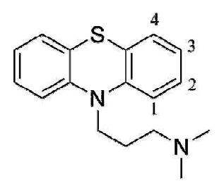
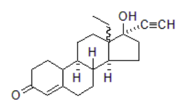

106 年第 1 次藥師藥理學與藥物化學試題與答案
這一頁是民國 106 年第 1 次藥師藥理學與藥物化學的整份歷屆試題，共 80 題，題目與標準答案出自考選部「國家考試試題及測驗式試題答案」開放資料。以下逐題列出題幹、選項與答案；要計時作答或記錄成績，請用線上練習。
考選部原始場次代碼：106020
線上作答這一科 →
全部 80 題
第 1 題
藥品在體內之排除常以清除率（clearance）來表示，其使用單位為：
- （A）mg/hr
- （B）mg/L
- （C）L/hr
- （D）min/L
答案：（C）
第 2 題
腎臟功能不好的病人，最可能影響vancomycin的何種狀況？
- （A）排除（Elimination）
- （B）吸收（absorption）
- （C）分布體積（volume distribution）
- （D）代謝（metabolism）
答案：（A）
第 3 題
有關一般藥物和其特定受體之結合作用，下列敘述何者正確？
- （A）KD值大即表示親和力（affinity）強
- （B）共價鍵結合
- （C）立體異構物（stereoisomer）皆有相等之親和力
- （D）多種微弱之結合力，如氫鍵、離子鍵或Van der Waals作用
答案：（D）
第 4 題
下列何種Penicillins可以與Aminoglycoside抗生素併用於治療綠膿桿菌（Pseudomonas aeruginosa）之感染？
- （A）Amoxicillin
- （B）Nafcillin
- （C）Penicillin G
- （D）Piperacillin
答案：（D）
第 5 題
下列何種藥物可抑制黴菌之Squalene epoxidase，影響細胞膜麥角固醇生合成，而達到殺菌作用？
- （A）Amphotericin B
- （B）Itraconazole
- （C）Micafungin
- （D）Terbinafine
答案：（D）
第 6 題
下列化學治療藥物，何者不是抑制thymidylate synthase？
- （A）Capecitabine
- （B）Pemetrexed
- （C）5-Fluorouracil
- （D）Cytarabine
答案：（D）
第 7 題
有關肺結核治療用藥與其主要副作用之配對，下列何者最為正確？
- （A）Isoniazid–暈眩、失去平衡
- （B）Ethambutol–肝毒性
- （C）Rifampin–使尿液染成橙色
- （D）Streptomycin–視神經炎
答案：（C）
第 8 題
下列抗生素之吸收何者較不受食物之影響？
- （A）Ampicillin
- （B）Dicloxacillin
- （C）Amoxicillin
- （D）Oxacillin
答案：（C）
第 9 題
下列有關Itraconazole抗黴菌藥物的敘述，何者錯誤？
- （A）Cimetidine會減低其吸收
- （B）Rifamycins類藥物會減低它的生體可用率
- （C）其吸收會被食物減低
- （D）其進入腦脊髓液的能力差
答案：（C）
第 10 題
抗凝血藥物Fondaparinux為抑制那一個凝血因子？
- （A）Ⅱa
- （B）Ⅶa
- （C）Ⅸa
- （D）Ⅹa
答案：（D）
第 11 題
有關Heparin引致血小板減少症（thrombocytopenia）時之處理方式，下列何者錯誤？
- （A）不能使用Warfarin治療
- （B）不可使用Fondaparinux治療
- （C）可使用Lepirudin治療
- （D）停止使用Heparin
答案：（B）
第 12 題
臨床上使用降血脂藥物，下列何者可能會降低葡萄糖耐受性？
- （A）Ezetimibe
- （B）Gemfibrozil
- （C）Niacin
- （D）Atorvastatin
答案：（C）
第 13 題
progestin合併estrogen主要在降低estrogen所引起的何種副作用？
- （A）子宮內膜增生
- （B）中風（stroke）
- （C）心肌梗塞（myocardial infarction）
- （D）乳癌
答案：（A）
第 14 題
下列何種糖尿病治療用藥是經由活化細胞內Peroxisome proliferator-activated receptor-gamma（PPAR-γ），進而改善病人胰 島素抗性（insulin resistance）？
- （A）Metformin
- （B）Acarbose
- （C）Glyburide
- （D）Pioglitazone
答案：（D）
第 15 題
下列何種藥物具有競爭性阻斷蕈毒鹼受體（muscarinic receptor）而加速房室結的傳導？
- （A）Nifedipine
- （B）Disopyramide
- （C）Lidocaine
- （D）Nitroglycerin
答案：（B）
第 16 題
同時患有糖尿病及高血壓的病人，服用下列何種抗高血壓藥物最易造成咳嗽之副作用？
- （A）Captopril
- （B）Verapamil
- （C）Propranolol
- （D）Losartan
答案：（A）
第 17 題
下列何種藥物最常用於治療出血性中風？
- （A）Hydralazine
- （B）Nifedipine
- （C）Isosorbide dinitrate
- （D）Nimodipine
答案：（D）
第 18 題待校
下列何者用於緊急性高血壓（Hypertensive emergencies）及手術後高血壓（postoperative hypertension）之藥物為 dopamine D1受體致效劑？
- （A）diazoxide
- （B）fenoldopam
- （C）minoxidil
- （D）nitroprusside
答案：（B）
第 19 題
下列何者不是Loop diuretics（利尿劑）之臨床適應症？
- （A）急性腎衰竭（acute renal failure）
- （B）陰離子過量（anion overdose）
- （C）高血鉀症（hyperkalemia）
- （D）高尿酸血症（hyperuricemia）
答案：（D）
第 20 題
針對不穩定型心絞痛病人而言，下列那一種治療不恰當？
- （A）以Nifedipine治療
- （B）投與Nitroglycerin
- （C）投與Atenolol
- （D）以Clopidogrel治療
答案：（A）
第 21 題
下列那一種藥物最不適合用來作為急性高血壓病人之初期治療藥物？
- （A）Sodium Nitroprusside
- （B）Fenoldopam
- （C）Diazoxide
- （D）Thiazide
答案：（D）
第 22 題
下列有關Osmotic diuretics之敘述，何者錯誤？
- （A）使心衰竭病人肺水腫更明顯
- （B）使血液鈉濃度降低，而引起頭疼、噁心等症狀
- （C）會使病人血糖降低
- （D）Urea為一種Osmotic diuretic，對有肝臟疾病之患者不宜使用
答案：（C）
第 23 題
裝有心臟去顫器（Cardioverter-defibrillator）之病人併用下列何藥物時，會增加去顫器之defibrillation threshold（即須增加電 壓）？
- （A）Amiodarone
- （B）Sotalol
- （C）Dofetilide
- （D）Ibutilide
答案：（A）
第 24 題
下列有關Thiazide利尿劑與其他藥物交互作用之敘述，何者錯誤？
- （A）與Quinidine併用有增加Torsade de Pointes等心室心律過快之危險
- （B）與Corticosteroid併用使血鉀降低作用增強
- （C）可增加鋰（Li+）之排出而減少鋰鹽之毒性
- （D）會增加Digoxin毒性
答案：（C）
第 25 題
下列何種藥物具有支氣管擴張作用，可以有效降低慢性阻塞性肺臟疾病發生率？
- （A）Tiotropium
- （B）Methacholine
- （C）Physostigmine
- （D）Atenolol
答案：（A）
第 26 題
下列何者為口服propranolol的禁忌？
- （A）青光眼
- （B）震顫
- （C）氣喘
- （D）高血壓
答案：（C）
第 27 題
β1選擇性致效劑較非選擇性β致效劑不易產生反射性心跳過速，原因為何？
- （A）非選擇性β致效劑能抑制迷走神經的傳導
- （B）非選擇性β致效劑能直接收縮血管
- （C）β1選擇性致效劑不作用在心肌
- （D）β1選擇性致效劑不活化舒張血管的β2受體
答案：（D）
第 28 題
下列消化性潰瘍治療藥物，何者長期服用會造成男性勃起功能障礙？
- （A）Cimetidine
- （B）Ranitidine
- （C）Sucralfate
- （D）Omeprazole
答案：（A）
第 29 題
有關Adalimumab之敘述，下列何者錯誤？
- （A）用於風濕性關節炎
- （B）為一IgM單株抗體
- （C）常以皮下給藥，其半衰期為10 ~ 20天
- （D）為TNF-α阻斷劑
答案：（B）
第 30 題
下列用於心律不整（arrhythmia）之治療藥物，何者能用於緩解糖尿病神經病變之疼痛（diabetic neuropathy pain）？
- （A）amiodarone
- （B）dofetilide
- （C）mexiletine
- （D）verapamil
答案：（C）
第 31 題
下列那一種安眠藥（Hypnotics）最不會影響人體正常睡眠狀態？
- （A）Diazepam
- （B）Phenobarbital
- （C）Triazolam
- （D）Zolpidem
答案：（D）
第 32 題
下列那一種藥物較適合用於治療焦慮症（Anxiety）？
- （A）Alprazolam
- （B）Ramelteon
- （C）Flumazenil
- （D）Bupropion
答案：（A）
第 33 題
有關臨床劑量之嗎啡作用的敘述，下列何者正確？
- （A）使血壓上升
- （B）使瞳孔放大
- （C）抑制呼吸
- （D）降低疼痛閾值（threshold）
答案：（C）
第 34 題
Galantamine最適宜治療下列何種疾病？
- （A）老年癡呆症
- （B）重症肌無力
- （C）廣角型青光眼
- （D）帕金森氏症
答案：（A）
第 35 題
下列何者並非使用嗎啡（Morphine）時常見的副作用？
- （A）瞳孔放大
- （B）呼吸抑制作用
- （C）便秘作用
- （D）抑制免疫活性
答案：（A）
第 36 題
下列何者並非嗎啡（Morphine）的藥理作用？
- （A）減少胃腸蠕動，治療下痢
- （B）增加黃體激素及濾泡激素的分泌作用
- （C）抑制水分與電解質蓄積於腸腔內
- （D）抑制咳嗽，止咳
答案：（B）
第 37 題
下列何者對於開發治療癲癇（Epilepsy）藥物的策略而言，是錯誤的？
- （A）阻斷麩胺酸（Glutamate）受體（Receptor）
- （B）抑制丘腦（Thalamic）的T-型鈣離子管道（Ca2+ channel）
- （C）減少興奮性麩胺酸（Glutamate）的神經傳遞作用
- （D）增加GABA的代謝
答案：（D）
第 38 題
帕金森氏症的發生係下列那兩種神經傳遞物質的平衡失調所造成的？
- （A）Serotonin/Dopamine
- （B）Glutamate/GABA
- （C）Dopamine/Acetylcholine
- （D）Norepinephrine/Epinephrine
答案：（C）
第 39 題
下列何者是治療轉移型結腸大腸癌的血管內皮生長因子（VEGF）單株抗體？
- （A）Alemtuzumab
- （B）Gemtuzumab
- （C）Cetuximab
- （D）Bevacizumab
答案：（D）
第 40 題
下列藥物何者可抑制mTOR（molecular target of rapamycin）在細胞內訊息傳遞，且用於抑制器官移植排斥？
- （A）Tacrolimus
- （B）Sirolimus
- （C）Cyclosporine
- （D）Prednisone
答案：（B）
第 41 題待校
下圖化合物為何者的代謝物？
答案：（D）
第 42 題
Met-enkephalin是由幾個胺基酸組成？
- （A）3
- （B）5
- （C）8
- （D）10
答案：（B）
第 43 題
下列有關fosphenytoin相較於phenytoin 的敘述，何者錯誤？
- （A）水溶性較佳
- （B）口服給藥
- （C）分子量較大
- （D）為前驅藥
答案：（B）
第 44 題待校
阿片類鎮痛藥alfentanil的結構為何？
答案：（D）
第 45 題
下列何者為全身麻醉劑isoflurane的代謝物？
- （A）CH3CH2COOH
- （B）CHCl2COOH
- （C）CF3COOH
- （D）HOCH2COOH
答案：（C）
第 46 題待校
下列何者為ezetimibe的結構？
答案：（C）
第 47 題
下列何者具有最好的口服生體可用率？
- （A）cimetidine
- （B）ranitidine
- （C）nizatidine
- （D）famotidine
答案：（C）
第 48 題待校
下列何者是piroxicam的主要代謝物？
答案：（D）
第 49 題
下列有關抗結核病藥fluoroquinolones的構效關係敘述，何者錯誤？
- （A）nonfluorinated quinolones對mycobacteria仍具活性
- （B）在N-1位置的cyclopropyl ring是重要基團
- （C）在C-6和C-8位置上的fluorine是重要基團
- （D）在C-7位置上的heterocyclic substituent是重要基團
答案：（A）
第 50 題
下列何種抗黴菌藥物結構屬於環狀胜肽類？
- （A）anidulafungin
- （B）ciclopirox
- （C）nystatin
- （D）tolnaftate
答案：（A）
第 51 題
下列何種四環素之結構，在C-9具有glycylamido基團？
- （A）doxycycline
- （B）minocycline
- （C）oxytetracycline
- （D）tigecycline
答案：（D）
第 52 題
下列青黴素（penicillins）中，何者對penicillinase穩定且可口服？
- （A）ampicillin
- （B）methicillin
- （C）oxacillin
- （D）carbenicillin
答案：（C）
第 53 題
Mitoxantrone在體內之代謝反應，不會經由下列何種途徑？
- （A）N-dealkylation
- （B）oxidative deamination
- （C）reduction
- （D）glucuronide conjugation
答案：（C）
第 54 題
抗癌藥物procarbazine是經由何種中間體抑制DNA？
- （A）methyl radical
- （B）aziridinium ion
- （C）hydroxy radical
- （D）superoxide anion
答案：（A）
第 55 題
下列何者為微生物ubiquinone reductase的抑制劑？
- （A）pentamidine
- （B）atovaquone
- （C）diloxanide furoate
- （D）eflornithine
答案：（B）
第 56 題
下列生物技術產品與其藥物分類之配對，何者錯誤？
- （A）teriparatide－parathyroid hormone
- （B）pegvisomant－growth hormone
- （C）erythropoietin－gonadotropin-releasing hormone
- （D）abatacept－tumor necrosis factor
答案：（C）
第 57 題
下列何者為造成蛋白質藥物光解（photodegradation）反應最主要的胺基酸？
- （A）alanine
- （B）glycine
- （C）histidine
- （D）tryptophan
答案：（D）
第 58 題
一般蛋白質或胜肽藥物half-life不長，原因與下列何者無關？
- （A）peptide bond hydrolysis
- （B）sulfur-containing residue oxidation
- （C）disulfide bridge reduction
- （D）olefin epoxidation
答案：（D）
第 59 題
Enflurane造成的肝炎與下列那個CYP酵素作用關係最大？
- （A）1A2
- （B）2E1
- （C）2D6
- （D）3A4
答案：（B）
第 60 題
下列有關藥物代謝的敘述，何者正確？①CYP酵素進行的催化反應，喜在缺電子的位置進行氧化 ②CYP酵素進行的催化反 應，喜在多電子的位置進行氧化 ③CYP酵素多含有鎂離子 ④Phase I代謝通常造成藥物極性變大
- （A）①③
- （B）②④
- （C）①④
- （D）②③
答案：（B）
第 61 題
下列有關esmolol之敘述，何者錯誤？
- （A）結構之骨架為aryloxypropanolamine
- （B）選擇性作用於β1受體
- （C）屬於長效性作用藥物
- （D）適用於上心室心搏過速（supraventricular tachycardia）之患者
答案：（C）
第 62 題
下列何者不是cocaine的水解產物？
- （A）benzoic acid
- （B）ecgonine
- （C）methanol
- （D）tropane
答案：（D）
第 63 題
Laudanosine為下列何種藥物經Hofmann elimination所產生的？
- （A）atracurium
- （B）doxacurium
- （C）mivacurium
- （D）pancuronium
答案：（A）
第 64 題
下列有關pilocarpine之敘述，何者錯誤？
- （A）結構中含二個手性中心（chiral center）
- （B）結構含imidazole環
- （C）於酸性條件下進行差向異構化（epimerization）形成isopilocarpine
- （D）可做成凝膠（gel）使用，但須貯於冷藏器（refrigerator）中
答案：（C）
第 65 題待校
下列藥物何者不會代謝成下圖化合物？
答案：（A）
第 66 題
為增加下圖化合物的抗精神病活性，第二位置處加入下列何種取代基最適合？

- （A）CH3
- （B）CF3
- （C）OCH3
- （D）NHCH3
答案：（B）
第 67 題
下列adenosine A2A antagonists，何者具有xanthine結構，用於治療Parkinson disease？
- （A）amantadine
- （B）sarizotan
- （C）istradefylline
- （D）memantine
答案：（C）
第 68 題
下列降血壓藥物中，何者為擬胜肽藥物（peptidomimetics）？
- （A）nifedipine
- （B）losartan
- （C）prazosin
- （D）timolol
答案：（B）
第 69 題
下列ACE抑制劑中，何者因結構含-SH基團使藥效最短？
- （A）captopril
- （B）enalapril
- （C）fosinopril
- （D）lisinopril
答案：（A）
第 70 題
下列何者不屬於臨床用強心苷的必要結構？
- （A）C14β-OH
- （B）C17α-unsaturated lactone
- （C）ring A-B cis fused
- （D）ring C-D cis fused
答案：（B）
第 71 題
下列calcium channel blocker降血壓藥中，何者可用於治療蛛網膜下腔出血（subarachnoid hemorrhage）？
- （A）amlodipine
- （B）felodipine
- （C）nimodipine
- （D）nicardipine
答案：（C）
第 72 題
下列何者是治療左心室功能不全造成急性肺水腫的首選藥？
- （A）osmotic diuretics
- （B）loop diuretics
- （C）thiazide diuretics
- （D）potassium-sparing diuretics
答案：（B）
第 73 題
下列有關acarbose之敘述，何者錯誤？
- （A）可抑制glucoamylase
- （B）可補充蔗糖來改善低血糖問題
- （C）主要以原型由胃腸道排出
- （D）常見有胃腸道刺激、脹氣等副作用
答案：（B）
第 74 題
下列有關放射碘之敘述，何者錯誤？
- （A）131I半衰期為60天
- （B）125I可藉由電子補獲（electronic capture）衰變為125Te
- （C）131I與 125I衰變時皆會產生γ射線
- （D）131I可治療甲狀腺癌
答案：（A）
第 75 題
下列類固醇型藥物中，何者具有N,N-dimethylphenyl基團？
- （A）danazol
- （B）eplerenone
- （C）mifepristone
- （D）finasteride
答案：（C）
第 76 題
下圖化合物屬於何類藥物？

- （A）androgenic agent
- （B）anabolic agent
- （C）estrogen
- （D）progestin
答案：（D）
第 77 題
Acetaminophen在幼兒的尿液中，主要代謝物為何？
- （A）glutathione conjugate
- （B）sulfate
- （C）glucuronide
- （D）N-acetylimidoquinone
答案：（B）
第 78 題
下列肥大細胞脫粒抑制劑（mast cell degranulation inhibitors），何者具有tetrazole之結構？
- （A）cromolyn
- （B）lodoxamide
- （C）nedocromil
- （D）pemirolast
答案：（D）
第 79 題
下列有關daptomycin的敘述，何者錯誤？
- （A）為發酵產物
- （B）具cyclic lipopeptide結構
- （C）抑制細胞壁生合成
- （D）具殺菌作用
答案：（C）
第 80 題
下列抗癌藥中，何者具有胺醣（amino sugar）結構？
- （A）dactinomycin
- （B）daunorubicin
- （C）mitomycin
- （D）mitoxantrone
答案：（B）
其他年度
回到藥師藥理學與藥物化學的年度總覽，
或到藥師題庫首頁看其他科目。
題目與標準答案出自考選部「國家考試試題及測驗式試題答案」開放資料。依中華民國《著作權法》第 9 條第 1 項第 5 款，
依法令舉行之各類考試試題不得為著作權之標的，得自由利用。詳解為 AI 整理的學習輔助，
並非官方標準答案；中華民國法規會修訂，引用前請對照現行版本查證。